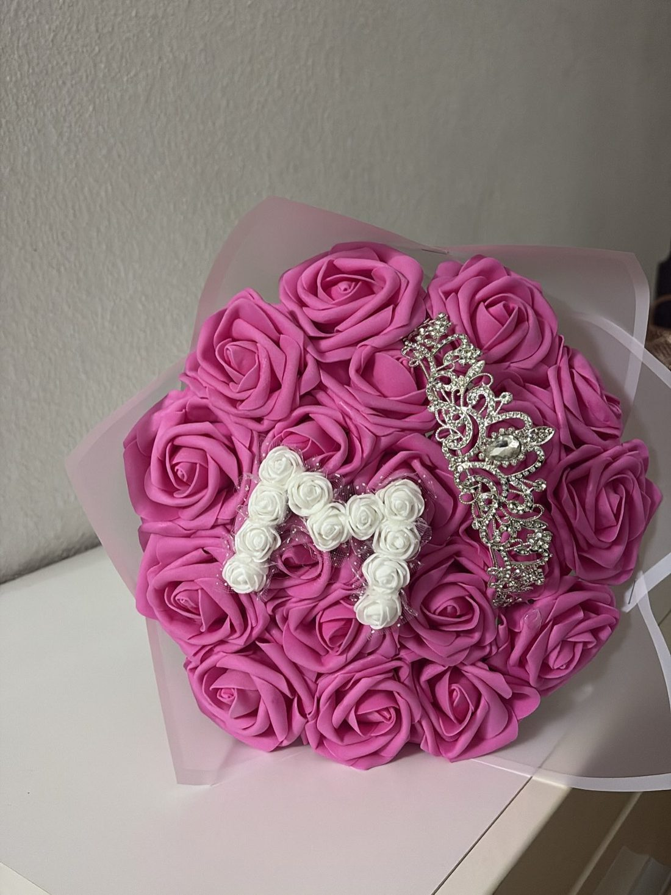
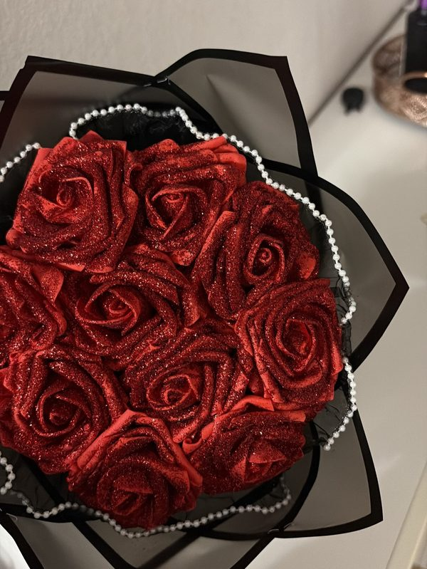
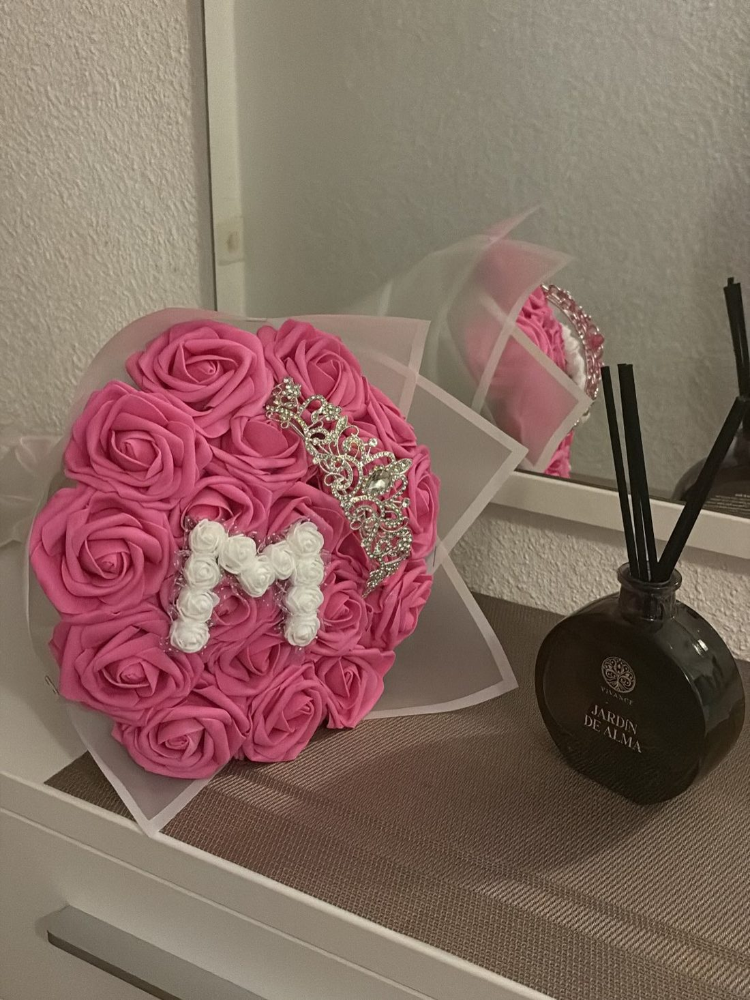

Des roses qui ne fanent pas.
Floryssance compose à la main des bouquets de roses artificielles, à Chavannes-près-Renens. Dix, vingt ou vingt-cinq roses, une initiale, une couronne, quelques lys : chaque bouquet est fait pour une personne précise.


Bouquets récents
Les dernières créations publiées sur Instagram. Touchez un bouquet pour voir toutes ses photos.

Composer votre bouquet
Choisissez, puis envoyez la demande en message privé sur Instagram. Floryssance vous répond avec le prix et le délai.
Bon à savoir
- De quoi sont faites les roses ?
- Ce sont des fleurs artificielles, en mousse. Elles gardent leur forme et leur couleur, sans eau ni entretien. Un pinceau doux suffit pour la poussière.
- Comment commander ?
- En message privé sur Instagram, à @floryssance_chay. Le composeur ci-dessus prépare le message pour vous : il suffit de le coller.
- Combien coûte un bouquet ?
- Le prix dépend du nombre de roses et des détails choisis. La grille complète se trouve dans la story à la une « Tarifs » du compte Instagram.
- Emballage et paiement
- Les papiers, rubans et modes de paiement sont détaillés dans les stories à la une « Infos/emballage » et « Paiement ».
- Où se trouve Floryssance ?
- À Chavannes-près-Renens, dans l'Ouest lausannois. La remise du bouquet se convient en message.
Une idée, une date, une initiale ? Écrivez directement.
Écrire à @floryssance_chay